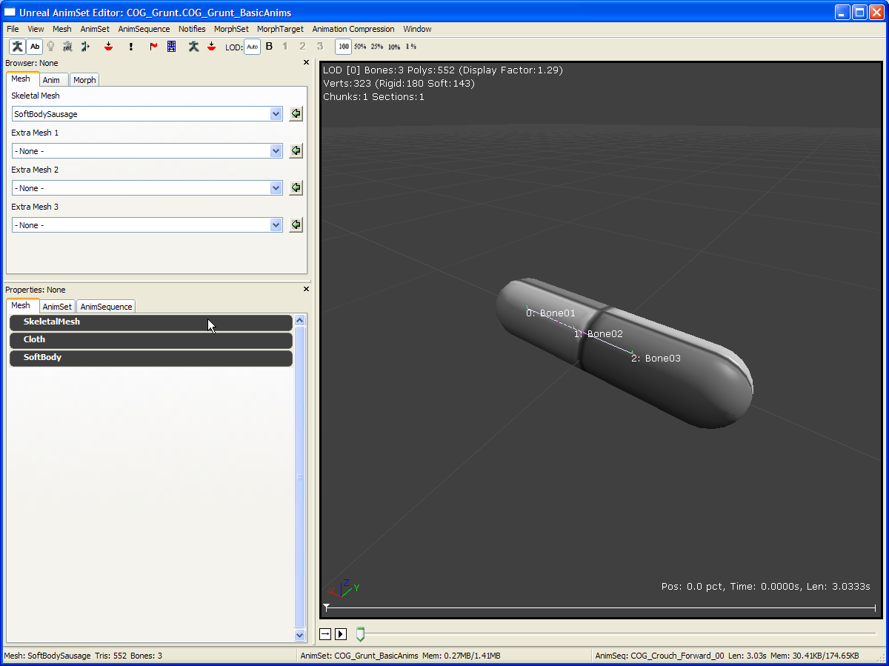
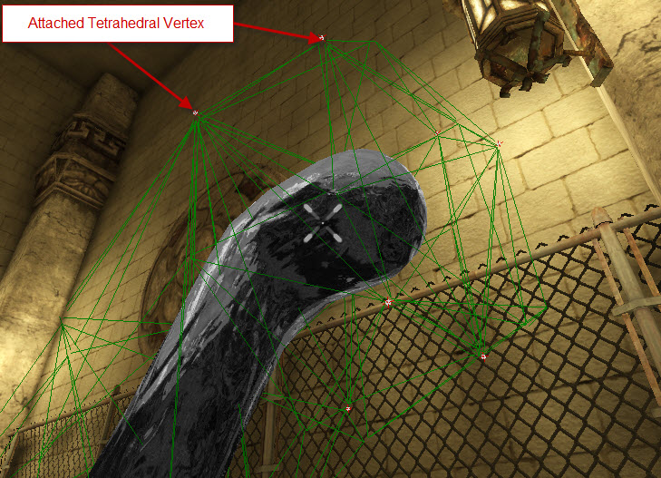

UDN
Search public documentation:
PhysXSoftBodyReferenceCH
English Translation
日本語訳
한국어
Interested in the Unreal Engine?
Visit the Unreal Technology site.
Looking for jobs and company info?
Check out the Epic games site.
Questions about support via UDN?
Contact the UDN Staff
日本語訳
한국어
Interested in the Unreal Engine?
Visit the Unreal Technology site.
Looking for jobs and company info?
Check out the Epic games site.
Questions about support via UDN?
Contact the UDN Staff
PhysX 软体
概述
UE3中的软体作为骨架网格物体的可选扩展提供，同布料类似。它们在编辑器中的应用和布料资源的处理非常类似 - 比如，如何导入、编辑软体网格物体以及如何把它们放到关卡中。在继续阅读本文之前，请确保您至少熟悉了如何使用布料的基本知识，因为本指南主要针对软体的详细介绍，只是快速地粗略介绍了它和布料共同的概念。 从整体角度来讲，这两个功能之间还是有显著差异的：
| 布料 | 软体 |
|---|---|
| 在布料仿真中，仿真网格物体是一个三角形网格物体，它们的顶点是骨架网格物体的图像化表现的一个子集(也就是这些顶点附加到布料骨骼上)。 | 对于软体来说，仿真网格物体是体积化的，并且是由四面体组成而不是由三角形组成。然后骨架网格物体的图形网格物体会被植皮到仿真四边形上，和图形网格物体植皮到刚体上类似。 |
| 仿真布料网格物体的分辨率是直接由其下面的图形网格物体的分辨率决定的。 | 仿真网格物体的分辨率可以独立于图形网格物体的分辨率进行控制(通过在AnimSet 编辑器中修改骨架网格物体时选择适当的软体四边形生成参数来实现)。 |
| 布料的变形有两个主要的行为参数，即阻碍以下动作的阻力的大小： - 拉伸布料。 - 弯曲布料。 | 软体的变形行为也有两个针对以下操作的两个“强度”参数 - 拉伸软体。 - 改变软体的体积。 |
- 不支持仿真网格物体的内部撕裂。
- "Auto Attachment(自动附加物)", 也就是不支持自动给软体添加附加物来使它和物理对象进行碰撞(但是支持通过“特定骨骼”的附加物)。
- 不支持软体仿真和正常植皮的混合结果 (也就是没有"SoftBodyBlendWeight")。
在 3D 内容创建包中创建骨架网格物体资源
第一步和布料的创建一样。所需的是为虚幻编辑器提供一个骨架网格物体，该骨架网格物体把一个或多个“软体骨骼”分配给它的顶点。当在类似于Max/Maya的3D工具中创建网格物体资源时，请确保至少创建一根附加到受到软体影响的网格物体顶点上的骨骼(既权重大于零)。 当完成编辑后，导出骨架网格物体到一个文件中，然后再把该文件导入到虚幻编辑器中。 (请参照掌握虚幻物理中的布料相关的文档,既15.8部分，来获得更多详细信息。)
将骨架网格物体导入到 UE3 中并设置软体属性
在内容浏览器中导入在3D编辑工具中创建的骨架网格物体。点击缩略图，打开AnimSet 编辑器，这将会显示骨架网格物体。以下是骨架网格物体（ SoftBodySausage ）的示例视图，它附加了3根骨骼(可以通过"视图>显示骨骼名称"来可视化地查看)。

现在，可以展开属性窗口左侧的 Mesh 选项卡下的 SoftBody 项来操作软体的属性。 上面显示了骨架网格物体最重要的属性：
上面显示了骨架网格物体最重要的属性：
- bForceCPUSkinning - 为了使得软体顶点进行真正的仿真，这项必须选中。
- SoftBodyBones - 和布料中的"ClothBones(布料骨骼)"数组一样，这个部分中输入的骨骼名称用于决定骨架网格物体的哪个部分作为软体进行仿真。这里，我们输入了所有3个骨骼的名称，所以将使用整个网格物体。
- SoftBodyVolume/Stretching Stiffness
- 设置这两个值为最大值1.0，这将会导致一个非常僵硬的软体，它将尽量尝试尽可能地保持原形。
- 设置体积强度为1.0，并设置拉伸强度为一个非常低的值(比如 0.0001，不允许0)，这将会产生一种"液体滴落"的行为，也就是软体将失去它原有形状，但是却仍然尝试保持同样的体积。
- 把这两个属性都设置为非常低的值，将会使得软体完全地失去它原有的形状。
- SoftBodyParticleRadius - 这和布料的“厚度”是等价的。它是软体和其他物理对象所保持的最小碰撞距离。提高这个值可以帮助防止软体在某些情况下穿过对象的情形。
- SoftBodyDetailLevel, SoftBodySubdivisionLevel, bSoftBodyIsoSurface - 这些属性控制生成的四边形网格物体的分辨率。请参照以下获得更多细节信息。
四面体网格物体预览
除了预览四面体网格物体外，您也可以通过点击”切换软体预览仿真“图标来预览仿真行为。 四面体网格物体生成算法有一个参数，通过调节它们可以控制仿真网格物体的 分辨率/质量。
四面体网格物体生成算法有一个参数，通过调节它们可以控制仿真网格物体的 分辨率/质量。
- SoftBodyDetailLevel / SoftBodySubdivisionLevel - 这些属性控制软体网格物体的分辨率。降低它们的值将会导致仿真网格物体具有较少的四面体和顶点，从而仿真时的性能消耗也较小。
- bSoftBodyIsoSurface - 如果启用该项，四面体生成器将首先围绕图形网格物体计算一个"等值面"，并使用它作为输入，而不是直接使用原始的网格物体数据。如果原始图形网格物体具有很多退化的三角形，这会导致生成器产生退化的仿真网格物体，从而导致仿真失真。
附加物
软体可以通过 SoftBodySpecialBones 来附加到一个骨架网格物体上，同样布料是通过 "ClothSpecialBones" 来进行附加的（请参照PhysXClothReference）。 作为概述，需要以下步骤：
作为概述，需要以下步骤：
- 必须为骨架网格物体创建一个简单的物理资源。为了创建这个资源，在内容浏览器中右击软体的骨架网格物体，并选择“创建新的物理资源”。选择 "Minimum Bone Size(最小骨骼尺寸)" 为-1。
- 现在，PhAT 应该可以显示出那个骨架网格物体，并且为每个骨骼显示了自动生成的碰撞盒。如果这个默认生成的碰撞盒不能满足您的要求，那么您可以编辑碰撞几何体的 缩放/方位/阻挡 行为。(请参照 PhATUserGuide(PhAT用户指南))
- 现在可以把附加的软体放置到关卡中。请确保!SkeletalMeshActor的SkeletalMeshComponent在它的 PhysicsAsset 属性中引用了新创建的物理资源，并且选中了 bHasPhysicsAssetInstance 。另外，需要设置SkeletalMeshComponent下的物理权重为 1.f。

添加软体到关卡中
为了把软体放到关卡中，需要在内容浏览器中选中骨架网格物体，并右击关卡编辑器来添加骨架网格物体actor到场景中。 打开新创建的actor的属性窗口：
 在 SkeletalMeshActor 下，您将会看到一个附加的类别 SoftBody 。为了在关卡中运行软体，需要启用仿真复选框。要想使它和关卡几何体进行碰撞，那么也需要选择适当的通道来和其进行碰撞，比如，上面屏幕截图中的是“默认”通道。
在 SkeletalMeshActor 下，您将会看到一个附加的类别 SoftBody 。为了在关卡中运行软体，需要启用仿真复选框。要想使它和关卡几何体进行碰撞，那么也需要选择适当的通道来和其进行碰撞，比如，上面屏幕截图中的是“默认”通道。
其他
- 当游戏运行时，有两个控制台命令可以使用:
- nxvis softbody_mesh – 可视化和软体相关的四面体网格物体。
- nxvis softbody_attachment – 显示附加到碰撞几何体或世界的点。
- 不幸的是，软体形状上"stiffness（强度）"参数的效果最终是由仿真时间步长的量值来决定的。即使强度值没有改变，较小的时间步长将会使得软体行为比较僵硬。当使用一个变化的仿真时间步长时，实际过去的仿真时间中的峰值可能导致软体开始突然地摇摆。
作为解决方案，您应该在具有固定时间步长间隔内运行软体。（比如，通过编辑器，通过 View(视图) > World Properties(世界属性) > Physics（物理） > PhysicsTimings（物理时机） > CompartmentTimingSoftBody（软体时间间隔） > bFixedTimeStep（固定时间步长））。
下载
- 下载软体的示例。